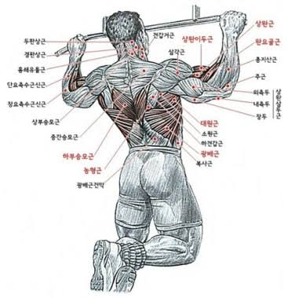
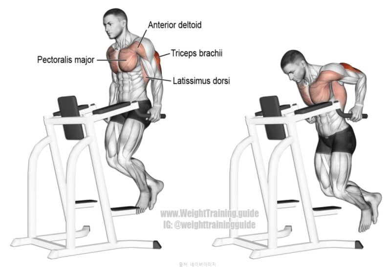
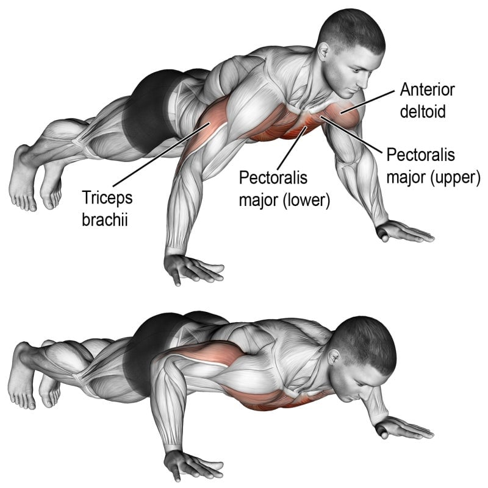

풀업 10개가 되는데 푸시업 20개가 안될리가...
저거 맨몸운동 1년이상 하면 가능은 한데
운동 안하는 사람이거나 아예 헬스장에서 다른 특정 부위만 키우는 사람이면 힘들듯
뇌절 할꺼면 확실하게 링머슬업 1개 가능으로 투표 바꿔라..
풀업이안돼요
풀업 딥스는 무게 많이나가면 헬스좀 해도 맨몸으로 하기 힘듬
딥스가 생각보다 존나 힘듬
ㅋㅋㅋㅋㅋㅋㅋㅋㅋㅋ 되겟냐
풀업 10개만 해도 힘들지 읺나
이정도라고???
니들 진짜 40살 넘어가면 좆된다;
팔과 다리가 자기몸 정도는 제어할수 있어야지
풀업 무반동 정자세 5개도 우수수 탈락이다
99프로 탈락임ㅋㅋ
그정돈 아님
1/1/10 해도 한 8~90프로 탈락아닐까... 풀업 하나가 벽이 ㅈㄴ높을껀데 ㅋㅋㅋ
헬스장만 다니면 이런착각하게됨
어릴 때 놀이터에서 놀던 애들은 다 함
풀업 딮스가 운동 꾸준히 안하면 3개도 넘사벽임 팔굽혀펴기 50개해도 저건 잘안대드라
풀업 딥스가 난관임... 푸쉬업은 용이성이라도 좋아서 간혹 있지만
2~30퍼 정도만 가능할거 같은데
풀업 10개랑 딥스 10개를 같은 선상에 놓은 것 자체가 운알못이네
데드행 풀가동범위로 풀업 11~12개 겨우 하는데 딥스는 첫세트에 30개 이상 수행 가능함. 둘이 같은 개수로 놓고 보면 안 됨.
풀업 5개로 해도 7할은 날림
풀업 10개면 푸쉬업 1세트 100개 정도 되는 난이도 아닌가
절대못함 ㅋㅋㅋ 일반남자들 풀업정자세 제대로 1개도 못하는사람 절반이상될껄? 대부분 풀업해보라하믄 죄다 팔근육으로만 벌벌벌벌떨면서올라감.
나는 할 수 있는데 다른 사람은 모름
클핏 1년 했는데 풀업 정자세로 8개까진 가능.
딥스+푸쉬업 개쌉가능
풀업 딥스에서 다 뒤짐
풀업6개월째하는데 10개는 벽임..
살을 빼....
뭐래 0 하나씩 다 빼도 힘들어
풀업 1개도 못하는 사람 많은데 ㅋㅋㅋ
10%정도는 할거임
왜냐면 요즘 운동이 가장 대중적인 취미니까
윗몸 10개로 바꿔야 밸런스 맞음